哈希表
哈希表（Hash Table，也叫散列表），是根据关键码值 (Key-Value) 而直接进行访问的数据结构。也就是说，它通过把关键码值映射到表中一个位置来访问记录，以加快查找的速度。哈希表的实现主要需要解决两个问题，哈希函数和冲突解决。
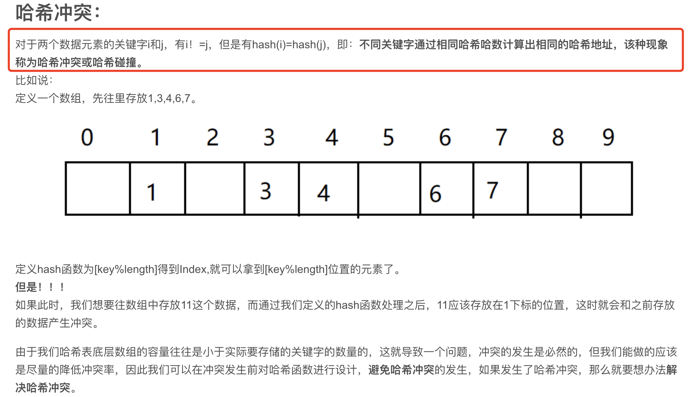
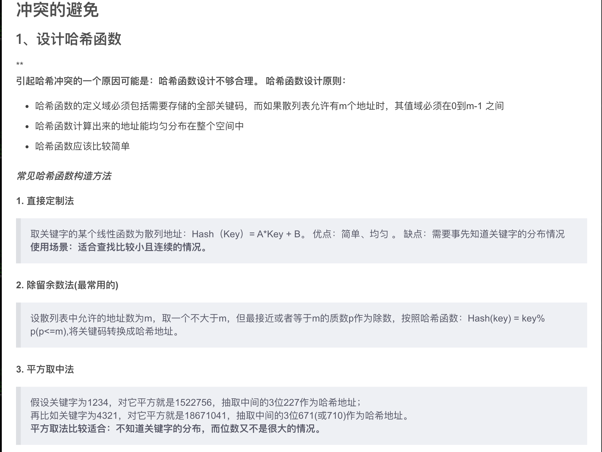
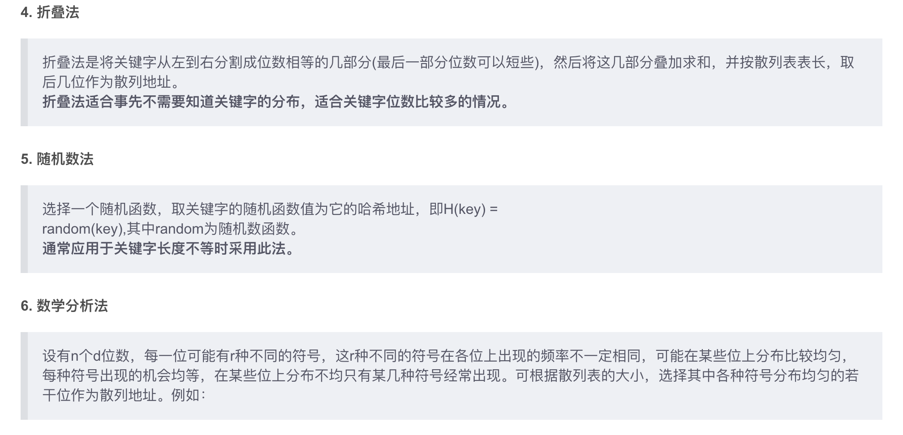
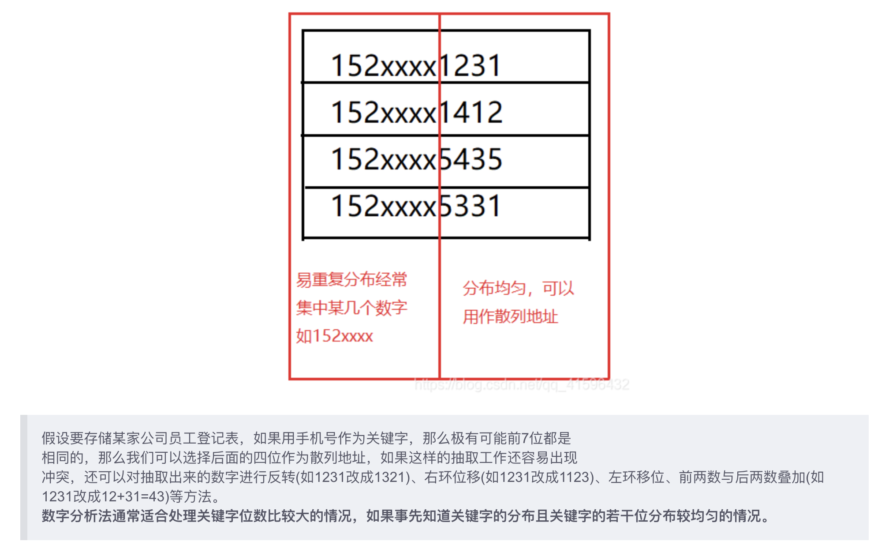
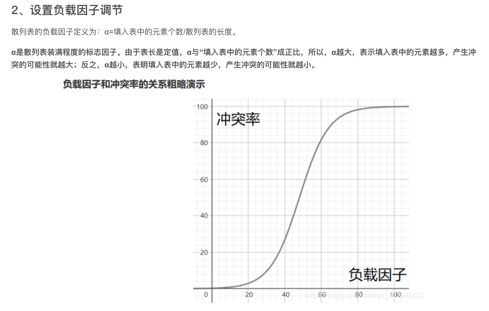
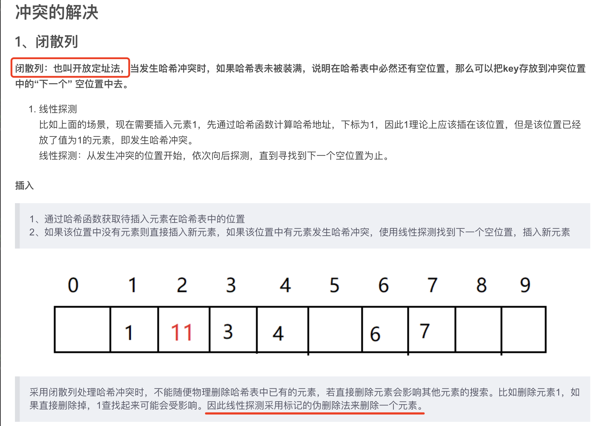
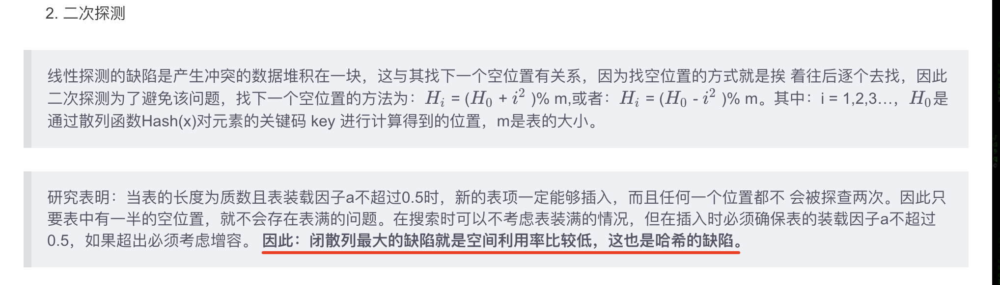
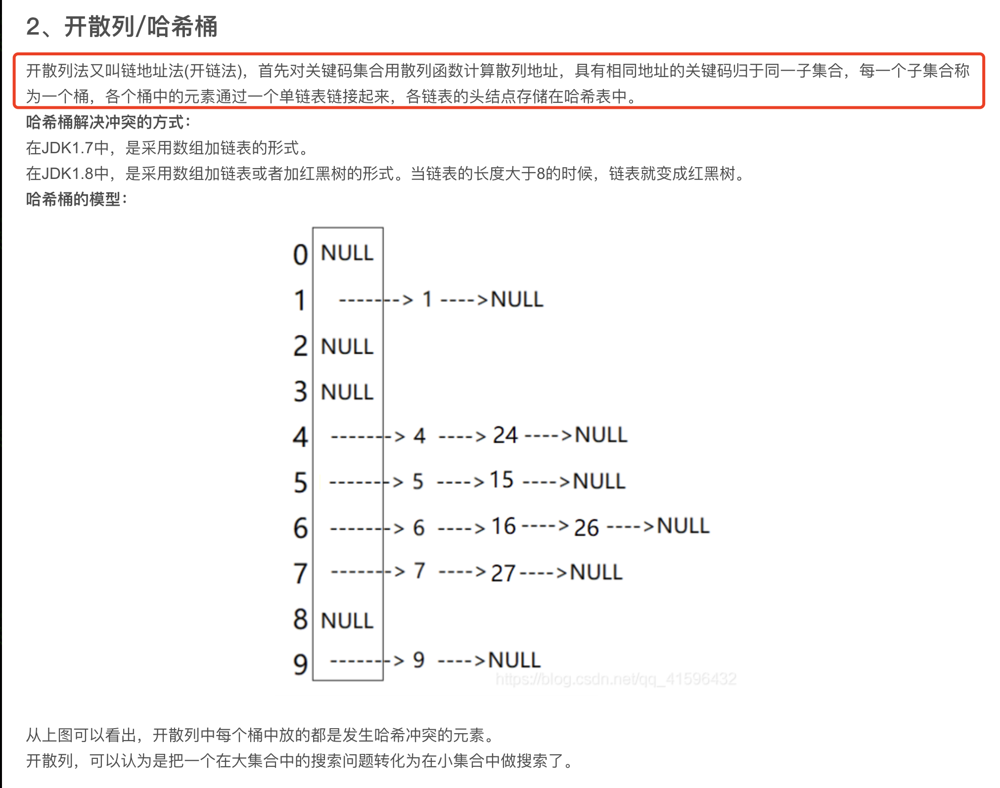
 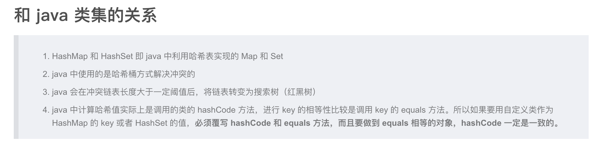
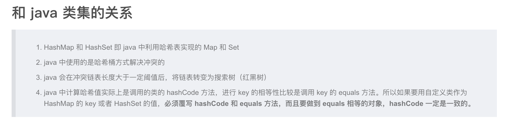
C++ 中的实现： C++ 中涉及哈希表的算法，通常使用 map 或 unordered_map 实现。 unordered_map的底层是一个防冗余的哈希表（开链法避免地址冲突）。unordered_map的key需要定义hash_value函数并且重载operator ==。 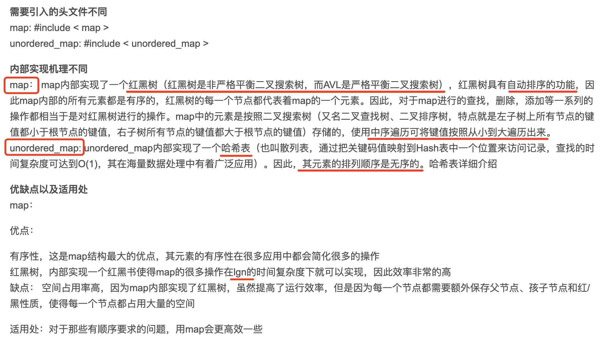 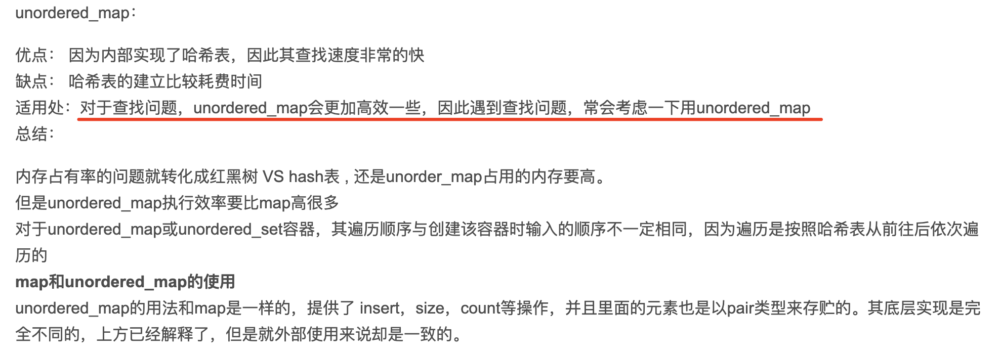 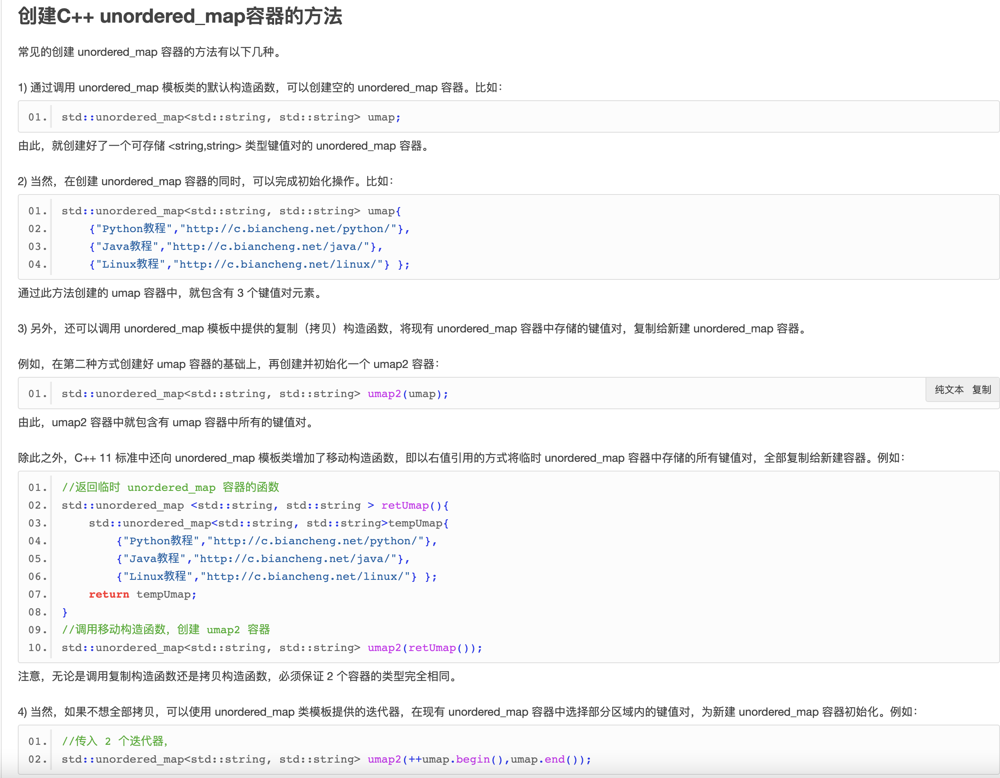 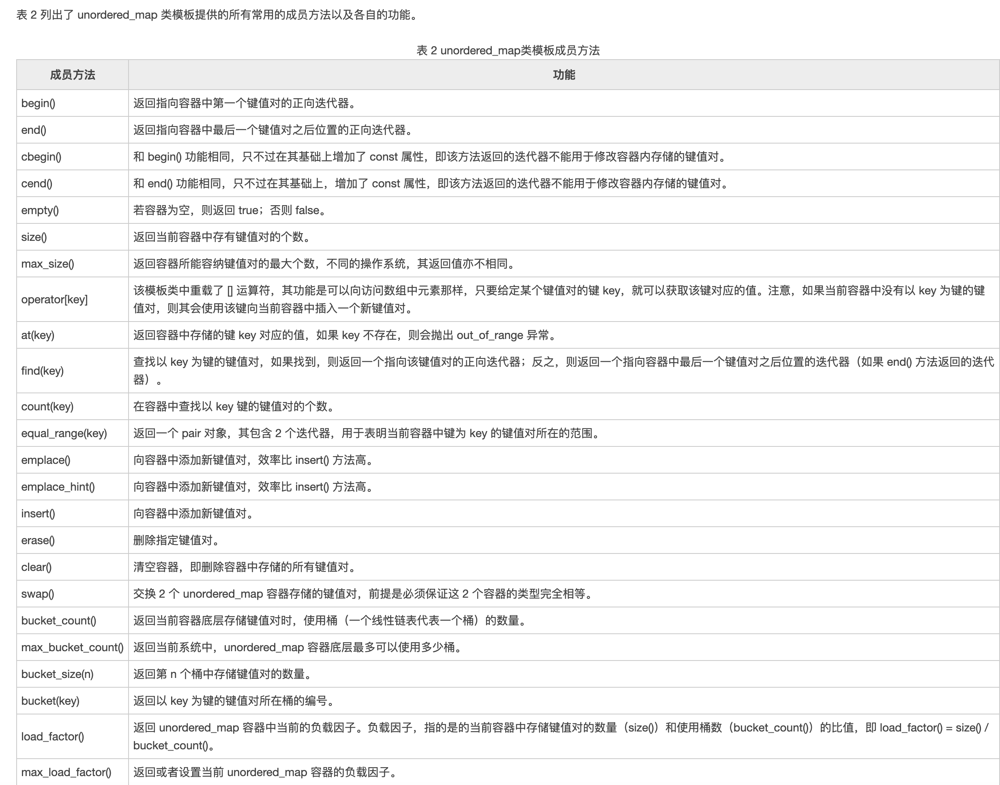 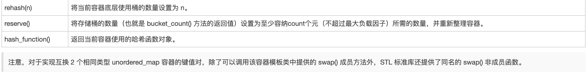
一个不成熟的思路，找出 words 在 s 中所有的出现次数，再判断出现次数和 words 的长度，如果绝对值等于 words 的长度，则认定 words 中的词相连，但问题是，如果 words 中的词多于 3 个，则需要使用多维数组，且计算 words 中的词是否相连也很困难，因为相连的词位置可能会变。 此题最好的方法还是 哈希表。
vector<int> findSubstring(string s, vector<string>& words) {
vector<int> index;
if (s.empty() || words.empty()) return index;
unordered_map<string,int > m1; //words
for(auto a : words){
++m1[a];
}
int n = words.size(), m = words[0].size();
for (int i = 0; i <= (int)s.size() -m * n ; ++i) {
int j=0;
unordered_map<string,int > m2;
for (j = 0; j < n; ++j) { // 检查三个 words 能否完全匹配
string sub = s.substr(i + j * m, m);
if (m1.find(sub) == m1.end()) break;
++m2[sub];
if (m2[sub] > m1[sub]){break;}
}
if (j == n){
index.push_back(i);
}
m2.clear(); // 清空map
}
return index;
}